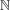
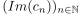
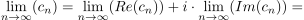

Konvergenz einer Folge: Komplexe Zahlen
1. Satz
Sei (cn)_{n ∈ $ eine Folge komplexer Zahlen. Die Folge konvergiert genau dann, wenn die beiden reellen Folgen $(Re(cn))_{n ∈  und  (siehe: Realteil, Imaginärteil) konvergieren Im Falle der Konvergenz gilt:

1